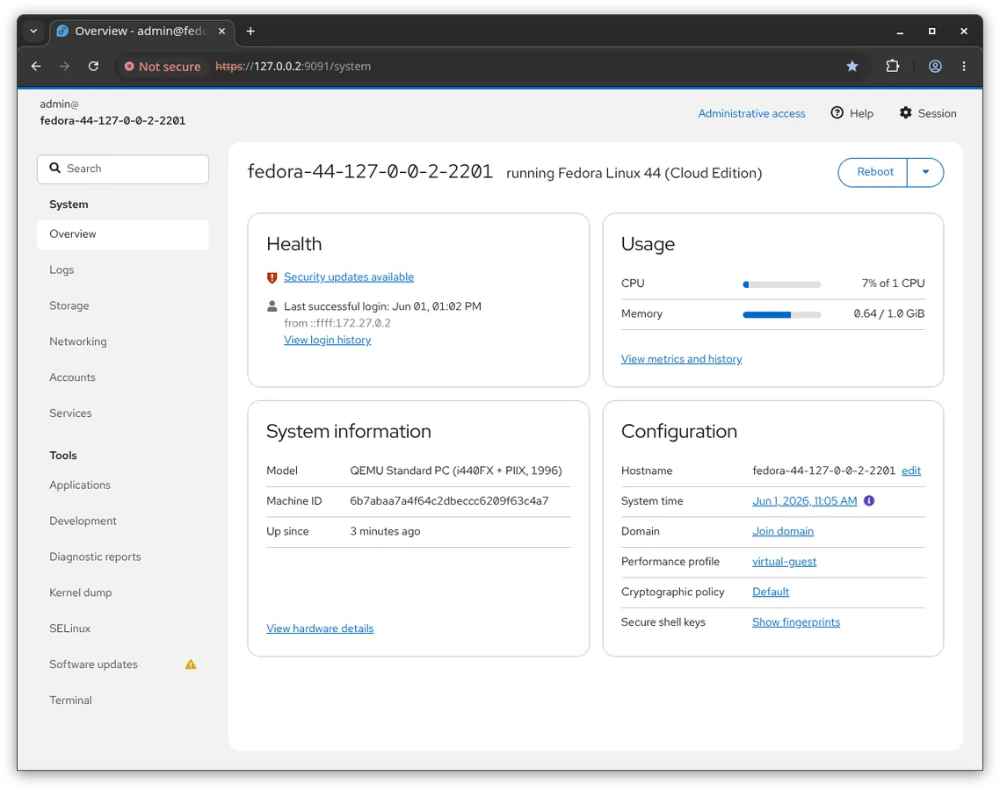
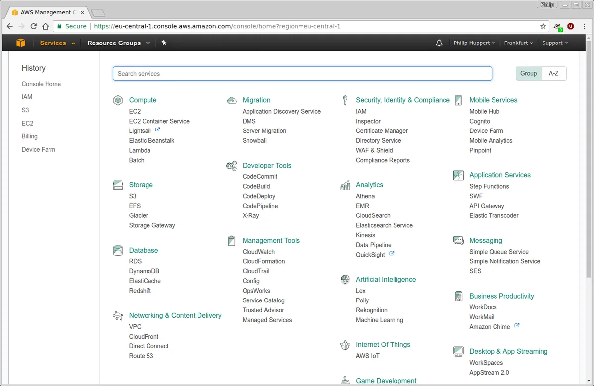
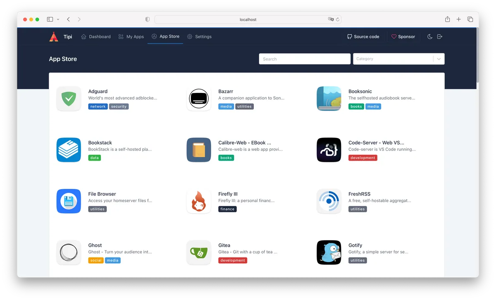
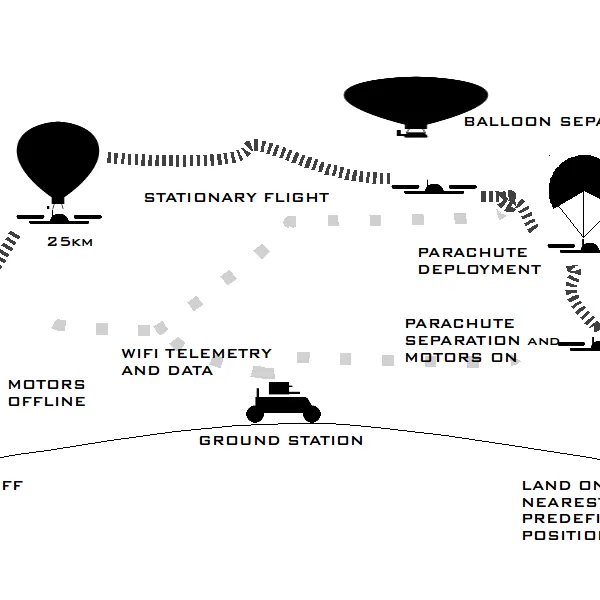

Cockpit
Manage a repurposed Linux server through a browser.
Showing records 1–53; filtering loads all pages in this category.

Manage a repurposed Linux server through a browser.
Use a low-power older device as a home-network DNS filtering node.

Evaluate alternative firmware for an Asus router still in service.
Use a spare host as a personal cloud and self-hosted app entry point.
Host applications and manage access on a home server.
Turn spare hardware into web-managed network storage.
Bring multiple older servers into one application platform.
Turn an old PC and storage hardware into a LAN NAS.
Repurpose a multi-NIC older computer as a network-edge appliance.
Use an older multi-NIC host as a router and firewall.

Use an older host for encrypted backup jobs.
Combine an older host and drives into network storage.
 Fallback
FallbackThe goal is to turn Xiaomi AX3600 into a maintainable OpenWrt router for routing, access-point or basic network-service duties.
FallbackThe goal is to turn Xiaomi AX9000 into a maintainable OpenWrt router for routing, access-point or basic network-service duties.
FallbackThe goal is to turn Xiaomi Mi Router 3 Pro into a maintainable OpenWrt router for routing, access-point or basic network-service duties.
FallbackThe goal is to turn Xiaomi Mi Router 3G v2 into a maintainable OpenWrt router for routing, access-point or basic network-service duties.
FallbackThe goal is to turn Xiaomi Mi Router 3G into a maintainable OpenWrt router for routing, access-point or basic network-service duties.
FallbackThe goal is to turn Xiaomi Mi Router 4 into a maintainable OpenWrt router for routing, access-point or basic network-service duties.
FallbackThe goal is to turn Xiaomi Mi Router 4A 100M Edition into a maintainable OpenWrt router for routing, access-point or basic network-service duties.
FallbackThe goal is to turn Xiaomi Mi Router 4A 100M International Edition V2 into a maintainable OpenWrt router for routing, access-point or basic network-service duties.
FallbackThe goal is to turn Xiaomi Mi Router 4A 100M International Edition into a maintainable OpenWrt router for routing, access-point or basic network-service duties.
FallbackThe goal is to turn Xiaomi Mi Router 4A Gigabit Edition v2 into a maintainable OpenWrt router for routing, access-point or basic network-service duties.
FallbackThe goal is to turn Xiaomi Mi Router 4C into a maintainable OpenWrt router for routing, access-point or basic network-service duties.
FallbackThe goal is to turn Xiaomi Mi Router AC2100 into a maintainable OpenWrt router for routing, access-point or basic network-service duties.
FallbackThe goal is to turn Xiaomi Mi Router WR30U into a maintainable OpenWrt router for routing, access-point or basic network-service duties.
FallbackThe goal is to turn Xiaomi MiWiFi 3A into a maintainable OpenWrt router for routing, access-point or basic network-service duties.
FallbackThe goal is to turn Xiaomi MiWiFi 3C into a maintainable OpenWrt router for routing, access-point or basic network-service duties.
FallbackThe goal is to turn Xiaomi MiWiFi Mini into a maintainable OpenWrt router for routing, access-point or basic network-service duties.
FallbackThe goal is to turn Xiaomi MiWiFi Range Extender AC1200 RA75 into a maintainable OpenWrt router for routing, access-point or basic network-service duties.
FallbackThe goal is to turn Xiaomi Redmi Router AC2100 into a maintainable OpenWrt router for routing, access-point or basic network-service duties.
FallbackThe goal is to turn Xiaomi Redmi Router AX6000 into a maintainable OpenWrt router for routing, access-point or basic network-service duties.
FallbackThe goal is to turn Xiaomi Router AX3200 into a maintainable OpenWrt router for routing, access-point or basic network-service duties.
Evaluate pooled storage, snapshots, and data protection on an older server.

Deploy and manage self-hosted apps on a spare machine.
FallbackThe goal is to turn Xiaomi Mi Router AX3000T into a maintainable OpenWrt router for routing, access-point or basic network-service duties.

Provide alternative firmware and network management on supported old routers.

Bring older routers into a community or home mesh network.
Use an older OpenWrt-capable router as part of a mesh network.

Extend networking capabilities and maintenance options on supported routers with open firmware.
FallbackThe goal is to turn Xiaomi Mi Router 4A Gigabit Edition into a maintainable OpenWrt router for routing, access-point or basic network-service duties.
FallbackThe goal is to turn Xiaomi Redmi Router AX6S into a maintainable OpenWrt router for routing, access-point or basic network-service duties.
Long-running material lives mainly in Doozan forum threads and replies, covering selected Zyxel, Seagate, Synology and Pogoplug devices.
A forum user reports a second T95Z Plus running Armbian and a ZFS pool as a simple NAS, while recording failed Wi-Fi and internal variants.
The goal is to convert GL.iNet GL-AR300M16-Ext into a Wi-Fi lab router for networks you own or are explicitly authorized to test. The X post supplies a hardware lead and GitHub supplies the build route.
Use candidate radio boards for off-grid text and telemetry networking.

The author combines old routers, PICs, Wii sensors, IP cameras and motors into a low-cost connected drone platform, with paper, blog and flight-controller links.
FallbackThe goal is to turn Xiaomi AX1800 into a maintainable OpenWrt router for routing, access-point or basic network-service duties.
FallbackThe goal is to turn Xiaomi AX6000 into a maintainable OpenWrt router for routing, access-point or basic network-service duties.
FallbackThe goal is to turn Xiaomi Mi Router CR660X into a maintainable OpenWrt router for routing, access-point or basic network-service duties.
FallbackThe goal is to turn Xiaomi Mi Router R3 into a maintainable OpenWrt router for routing, access-point or basic network-service duties.
FallbackThe goal is to turn Xiaomi Mi Router TR60X into a maintainable OpenWrt router for routing, access-point or basic network-service duties.
FallbackThe goal is to turn Xiaomi MiWiFi Nano into a maintainable OpenWrt router for routing, access-point or basic network-service duties.
FallbackThe goal is to turn Xiaomi R3D into a maintainable OpenWrt router for routing, access-point or basic network-service duties.
Remove a filter or try another device/model term.